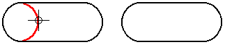
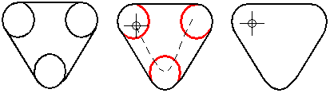

Trim an element
-
Choose the Sketching tab (or Home tab)→Draw group→Trim command .
Note:Use Command Finder to find the command in your current environment.
-
Do one of the following:
-
To trim one element at a time, click each element you want to trim.

-
To trim more than one element at the same time, drag the cursor over the elements. When you release the mouse button, all the elements are trimmed.

Note:In the synchronous environment, before you can use the drag method you must lock the sketch plane. The best way to do this is to select the sketch in PathFinder, and then use the Lock Sketch Plane command on the shortcut menu. To learn more, see Sketch plane locking.
-
Right-click to end the command.
-
-
To preview the trim operation before you click, move the cursor over the elements. The software highlights the portion of the element that will be trimmed.
-
If you trim an element that does not intersect any other elements, the command trims the entire element, effectively deleting it.
-
You can trim elements from the selected element by holding Ctrl and clicking the element you want to trim.
-
To prevent some elements from being trimmed unintentionally, you can:
-
First, select the elements you do not want to trim.
-
Select the Trim command.
-
Select the elements you do want to trim by dragging the cursor over them or clicking them.
-
How do I
Draw a corner by trimming and extending elementsLook up more details
Trim commandTrim Corner command